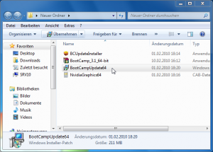
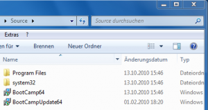
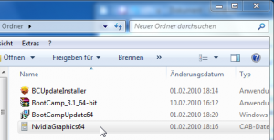
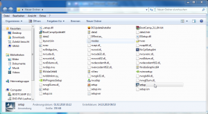

Bootcamp 3.1 erscheint immer wieder im Apple Software-Update(r)
Nachdem wir im vorherigen Artikel die erste Hürde mit Bootcamp 3.0 gemeister haben, wird es nun mit Bootcamp 3.1 um einiges aufwändiger.
Ich habe dieses Update schon vorher auf der Apple-Download-Seite Apple-Download-Seite runtergeladen und starte die Datei namens BootCamp_3.1_64-bit.exe, sodass ich das Apple Software-Update zunächst garnicht benötige.
Dieses Update läuft scheinbar gut durch, allerdings stelle ich nach einem Neustart fest, dass dieses Update immer noch im Apple Software-Update(r)-Programm steht, mit welchen man unter Windows neue Treiber etc. erhält.
OK denke ich, vielleicht lag es daran, dass ich es direkt geladen habe und es nicht über die Apple Software Update-Schnittstelle installiert habe. Gesagt getan, nun lädt Apple Software Update die Bootcamp3.1-Datei runter und installiert diese. Leider muss ich nach einem Neustart feststellen, dass dieses Update schon wieder dort unter verfügbare Updates auftaucht, d.h. nicht installiert wurde. Als Administrator starten und/oder mittels Kompatibilitäsmodus installieren hat hier leider nicht weitergeholfen.
Nach einer Weile Suche in diversen Mac-Foren und einigem Ausprobieren bin ich darauf gestoßen, dass das Update Probleme mit dem Nvidea-Treiber (Nvidea Gforce 9400) innerhalb des 3.1 Update-Paketes in Kombination mit dem schon installierten Bootcamp 3.0 hat, d.h. die jeweils integrierten Nvidea-Treiber sind im Windows Installer scheinbar irgendwie nicht miteinander kompatibel.
Im Apple-Discussion-Forum fand ich dann schließlich doch den Ansatz einer Lösung, der sich nach einigem Ausprobieren zum folgendem Workaround entwickelt hat:
Zunächst lädt man sich auf der Apple-Download-Seite die Datei http://support.apple.com/downloads/DL979/de_DE/BootCamp_3.1_64-bit.exe.
Dann benötigt man den Universal Extractor, welchen man hier laden kann und installiert diesen.
Nun Deinstallieren wir zunächst über Systemsteuerung/ Programm deinstallieren/ Bootcamp 3.0.
Wir erstellen auf
c:\einen Orderner namens “Source”, alsoc:\sourceund kopieren dort die DateiBootcamp64.msihinein, zu finden auf der MacOS X-Install-DVD unterBoot Camp\drivers\Apple\Bootcamp64.msi.Jetzt widmen wir uns der unter 1. runtergeladener 3.1-Update-Datei und extrahieren diese mittels Klick mit rechter Maustaste auf diese Datei und wählen Uniextract hier. Damit erhält man vier neue Dateien:
Wir kopieren die Datei
BootCampUpdate64.mspauch in das unter 4. erstellte Verzeichnisc:\source.Nun führen wir unter Start/Ausführen folgenden Befehl aus und warten ungefähr zwei Minuten:
msiexec /a C:\SOURCE\BootCamp64.msi /p C:\SOURCE\BootCampUpdate64.mspDamit erstellen wir neue Dateien, in denen die Treiber des 3.1-Update in das 3.0-Update gepackt werden, mit Ausnahme des Grafiktreibers, welchem wir uns später zuwenden.Nach einiger Zeit sieht das Verzeichnis
C:\sourceso aus:
Nun starten wir die veränderte Datei
Bootcamp64.msiund installieren diese. Es ist war zwar die ursprüngliche 3.0-Update-Datei, jetzt aber mit allen Treiber-Updates des Bootcamp 3.1-Updates.Nach einem Neustart des Systems stellen wir fest, dass Bootcamp 3.1 installiert ist und nicht mehr als verfügbares Update im Apple Software-Update(r) angezeigt wird.
Nun sollten alle Probleme mit dem Apple Trackpad, mit der roten LED beim Audio-Port und mit dem Wireless Keyboard sowie der Apple Magic Mouse behoben sein.
Allerdings haben wir so die Installation der Grafikkartentreiber übergangen und müssen deren Treiber aus dem 3.1 Update noch installieren:
i) Wir wenden uns nochmal der unter 5. extrahierten Dateien zu mit Fokus auf die Datei NvideaGraphics64.cab. Hier klicken wir wieder mittels rechter Maustaste auf diese Datei und wählen Uniextract hier, sodass wir wir eine zusätzliche Datei in diesem Ordner namens NVideaGrfx64.caberhalten.

ii) Jetzt klicken wieder wieder mittels rechter Maustaste auf diese neue Datei und wählen Uniextract hier. Nun haben wir es komplett entpackt und finden Folgendes vor:

iii) Danach einfach auf Setup.exe (doppel-)klicken und der neue Grafikkartentreiber aus dem Bootcamp 3.1-Update wird auch (endlich) installiert.
Die bei NVidea angebotenen Treiber für die Gforce 9400 funktionieren hier leider nicht, so dass diese Vorgehensweise zwingend erforderlich ist.
iv) Letzter Neustart und endlich fertig.
Herzlichen Glückwunsch, nun haben Sie erfolgreich alle aktuellen Treiber inkl. Grafikkartentreiber mittels Bootcamp 3.1 auf Windows 7 64bit installiert.
Das ganze funktioniert übrigens auch bei den iMacs, z.B. 21” oder 27”, hier haben nur die Grafikkartentreiber einen anderen Namen, da sie von ATI stammen, die Vorgehensweise ist jedoch grundsätzlich gleich.